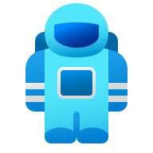

Hey
Nuo
Search...
Ctrl K
Home
Quran
108 Verses
Ruqyah
About
Contact

404
Oops! The page you're looking for doesn't exist or has moved.
Go Home
Search Articles
Contact Me
⚡ Explore Popular Resources:
☕
Java OOP Guide
📖
Ruqyah & Theology
🌐
Web Dev Roadmap
↑
⌨️ Keyboard Shortcuts
✕
Enable Single-Key Shortcuts (T, H, A, C, ?, Space)
Turn off if using speech-to-text or screen readers (WCAG 2.1.4)
Search & Command Palette
Ctrl + K
or
/
Toggle Dark / Light Mode
T
Go to Home
H
Go to About
A
Go to Contact
C
View Shortcuts
?
Quran Play / Pause
Space
Next / Previous Surah
→
/
←
Minimize / Restore Player
V
Surah Playlist Queue
Q
Fullscreen Player Modal
F
Close Any Dialog
Esc